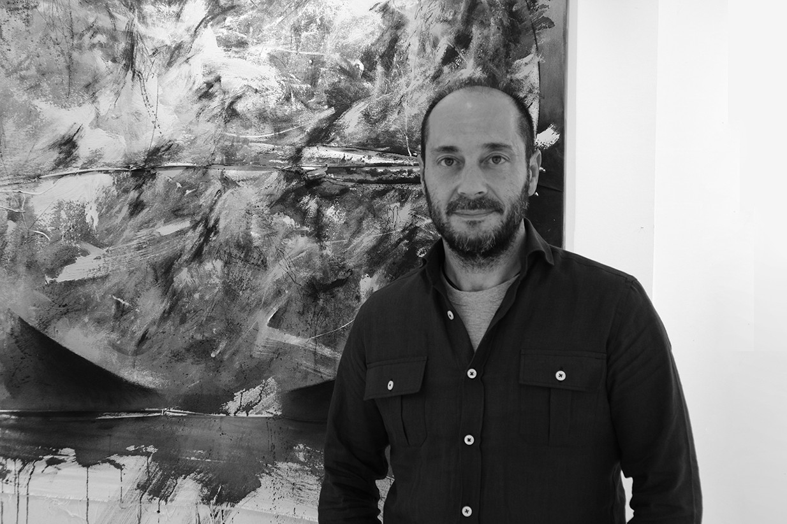

Curriculum

Manolo Granado Giraldo
(Ibi, Alicante, 1969). Actualmente reside en Banyeres de Mariola (Alicante).
Formación
- Curso de decoración de vidrio artístico, en Villena (Alicante).
- Curso de grabado. Seminaris Internacionals d´Estiu, LA RECTORIA, Barcelona.
- Curso de técnicas de collage y exploración creativa, CMAGEC y Facultad de Bellas Artes de Murcia.
- Curso de “Formador de Formadores”, Human Development.
Manolo Granado es un artista plástico con una sólida trayectoria de casi cuarenta años. Sus inicios son de formación autodidacta, formándose posteriormente; alcanzó muy pronto un exquisito dominio del realismo, lo que le permitió dedicarse profesionalmente al arte desde muy joven, tanto a través de obras por encargo como en el ámbito de la restauración de frescos y otras piezas artísticas.
Sin embargo, su inquietud creativa, su interés por la investigación y la vanguardia, y su constante búsqueda de un lenguaje propio lo impulsaron a explorar nuevos caminos y a adentrarse en el universo de la abstracción.
Actualmente compagina la creación artística con otra de sus grandes pasiones: la enseñanza. A través de clases y talleres, comparte una experiencia y unos conocimientos adquiridos durante décadas de dedicación. Es, además, un profundo conocedor del arte del grabado, cuyas técnicas se encuentran entre las más apreciadas y demandadas de sus talleres.
Exposiciones individuales
- 2025IM’PRESIONES DE ESTUDIO. Pintura y obra gráfica. Banyeres de Mariola.
- 2023Proyecto Expositivo “POIESIS” Fundació Caixa Ontenient. (Valencia).
- 2023Proyecto Expositivo "POIESIS" junto a Fernando Ayelo, Fundación Mutua Levante de Alcoy (Alicante).
- 2022Exposición “FRONTERAS DE PAPEL” Expai Expositiu del Teatre. Banyeres de Mariola (Alicante).
- 2022Exposición “FRONTERAS DE PAPEL” Grabados y collages. GALERÍA CASAZOBEL. Cuenca (Castilla la Mancha).
- 2022Proyecto Expositivo “POIESIS” junto a Fernando Ayelo. Sala de Exposiciones Ermita de San Vicente. Ibi (Alicante).
- 2020Exposición “MUNDOS SUTILES” Casa de Cultura KAKV, Villena (Alicante).
- 2019Exposición en el Hotel Eurostars Centrum de Alicante (Grabados y collages).
- 2018Exposición “SERES Y ESTARES” Grabados y collages, en la Fundación Mutua Levante Alcoy (Alicante) y la sala Joan de Joanes, Bocairent (Valencia).
- 2015Exposición “LUCIDEZ TRANSITORIA” sala Arpella, Espai d'art. Muro (Alicante).
- 2013Exposición “BABEL” espacio cultural Casamayor (Alicante).
- 2013Exposición didáctica de Grabado “IMPRESIONES” Museu Valencià del Paper. Banyeres de Mariola.
- 2005Exposición “VINCULOS” Sala de Exposiciones Ermita de San Vicente. Ibi (Alicante).
- 2005Exposición “VINCULOS” Fundación Valor Banyeres de Mariola (Alicante).
- 2004Exposición “VISIONES INTERIORES” Palau Comtal. Espai d’Art. Cocentaina (Alicante).
- 2002Exposición ”SÍNTESIS” Sala Pintor Jover. Centro de Cultura de la Vila en Muro (Alicante).
- 2001Exposición“PINTURAS” Casa de Cultura de Xátiva (Valencia).
- 2000Exposición “PARAJE INTERIOR” Caja de Ahorros de Onteniente de Albaida (Valencia).
- 2000Exposición “LAS ARISTAS DEL TIEMPO” Hotel Borgia, Gandía (Valencia).
- 2000Exposición ”PINTURAS” PUB-ART, Galería Experimental. Onteniente (Valencia).
- 1996Exposición “UTOPI’ ART” Círculo Industrial, salón Rotonda, Alcoy (Alicante).
- 1995Exposición ”PINTURAS” Café Galería Experimental DRAC MAGIC. Ibi (Alicante).
- 1993Exposición “EL ARTE DE LA CONFUSIÓN” bar Galería Experimental EL TUNEL. Villena (Alicante).
Exposiciones colectivas
Cuenta con más de 80 exposiciones colectivas, entre ellas:
- 2026ULTRAMAR Diálogos entre la creación y el azul. Espai d’art contemporani. La Vilajoiosa y Fundación Eberhard Schlotter. Altea.
- 2023Muestra de Arte Contemporaneo LUZ Y SOMBRAS. Fundación Pedro Cano. Blanca (Murcia).
- 2023Exposición colectiva PERSEVERANCIAS. Galería El Cau del Roure (Valencia).
- 2023RetratArt. Fusió d’art. Fundación Mutua Levante. Alcoi (Alicante).
- 2022II Mostra Internacional REGAL’ART 20x20. Cocentaina (Alicante).
- 2022Muestra de Arte Contemporáneo LUZ Y SOMBRAS. Caudete (Castilla la Mancha).
- 2021Mediterraneus ars liber. Reseña internacional del libro de artista, Museo del mar. Santa Pola (Alicante).
- 2021Mediterráneo. Museo del calzado de Elda (Alicante).
- 2021Exposición colectiva Galería Casa Zobel (Cuenca).
- 2020Exposición colectiva MARE NOSTRUM. Nápoles (Italia).
- 20181ª Mostra d’Art Social, sala Unesco. Alcoy (Alicante).
- 2018Exposición Colectiva contemporánea en la Galería Abartium (Barcelona).
- 2016Mostra d' arts plàstiques “El PODER ús i abús” Centre sociocultural de L'Eliana (Valencia).
- 2016II Muestra Internacional d'Art Compromés. Cocentaina (Alicante).
- 2015Mostra de pintura als balcons “PARAULES PINTADES” Bocairent (Valencia).
- 2014XIV Mostra Art d’aci. Muro (Alicante).
- 2012Exposición colectiva en la sala Ocho y medio, Alicante.
- 2012Exposición colectiva con la galería ConvulsionArte en el Centro Municipal de las Artes de Alicante.
- 2012Exposición colectiva Libro de artista “SOÑAR EN SOÑAR”. EKA&MOOR ART GALLERY, Madrid.
- 2011-2012Muestra colectiva homenaje a “Josep Albert Mestre”.
- 2010Exposición colectiva “ El text com a pretext”. Muro (Alicante).
- 2010“Artistes pels drets humans” Sala UNESCO. Alcoy (Alicante).
- 2010Participa con una escultura en “Biodivers Carricola” espai d’art mediambiental.
- 2008Exposición colectiva Asociación Art Nostre. Centro Ovidi Montllor, Alcoy (Alicante).
- 2008Exposición Sala de exposiciones temporales de Benejama (Alicante).
- 2008Exposición colectiva” REGAL’ART” Alcoy.
- 2006I Exposición itinerante de artes plásticas “ART NOSTRE” Banyeres de Mariola, Biar, Cocentaina, Muro y Onil.
- 2006VI Mostra colectiva d’integració de les arts “ARTS PER LA UNESCO” Sala UNESCO. Alcoy (Alicante).
- 2006Exposición colectiva “INMIGR-ART” Sala Pintor Jover, Muro (Alicante).
- 2006VIII Mostra colectiva “ARTS PER LA LLIBERTAT”. Sala UNESCO. Alcoy (Alicante).
- 2005Art al voltant de l’Ovidi. Muro (Alicante).
- 2004I Exposición colectiva “Pintores Alicantinos”. Salón Principal. Villena (Alicante).
- 2004Ocupa-ments. I Mostra d’intervencions artístiques al carrer. Agres (Alicante).
- 2003Exposición en los salones del restaurante KIKO PORT. Oliva (Valencia).
- 2003Exposición Casa de Cultura, Bellreguard (Valencia).
- 2003II Mostra colectiva de integración de las artes “PINTANT PARAULES” Sala UNESCO, Alcoy (Alicante).
- 2002Exposición organizada O.N.G. “Viviendas para los sin techo” Hotel Borgia Gandía (Valencia).
- 2002III Mostra en format menut Art d’ací. Muro (Alicante).
- 2002Exposición en la Sala del Teatro Wagner de Aspe (Alicante).
- 2001Exposición Grifani Donati. Città di Castello (Italia).
- 2001Exposición en la sala “Costura Pedro”de Albaida (Valencia).
- 2001II Mostra en format menut. Art d’ací, Muro (Alicante).
- 2001Exposición Café La Galería, Banyeres de Mariola (Alicante).
- 2000Mostra en format menut. Art d’ací. Muro (Alicante).
- 2000-2001Exposición itinerante. Organiza Casal Jaume I . “A QUATRE BANDES” . Onteniente, Alicante, Javea, Benidorm, Elche, Gandía, Valencia, Villa-Real, Castellón.
- 2000Exposición Galería de Arte JUBEMA. Valencia.
- 2000Exposición Sala “Costura Pedro”.Albaida (Valencia).
- 2000Exposición Café “Galería”. Banyeres de Mariola (Alicante).
- 1998Exposición “ESENCIAS Y DIÁLOGOS”. Casa de Cultura Castalla (Alicante).
- 1994Donación obra “PROYECTO HOMBRE” Caja Rural Villena (Alicante).
- 1992I Mostra “ART JOVE” Casa de Cultura. Banyeres de Mariola.
- 1990Exposición con el colectivo CAMIÓ. Casa de Cultura, Banyeres de Mariola (Alicante).
- 1990I Exposición artistas de Banyeres . Organiza A.M.P.A. del C.P. Alfonso Iniesta. Fundación Valor.
Premios y selección de obra
- 2021Selección de obra gráfica para exposición en el “Instituto Cervantes de Bordeaux. Francia.
- 2021Finalista Certamen de Artes Plásticas DCOOP categoría de grabado. Antequera (Málaga).
- 20213er premio Concurso de Pintura Rápida de Beneixama.
- 2020VIII Bienal Iberoamericana de obra gráfica, Ciudad de Cáceres.
- 2019II Edición obra gráfica Mini Print Internacional de Cantabria.
- 2016V Bienal Internacional de Grabado Diputación de Valladolid.
- 2015-2017-1019Certamen Internacional de Grabado ATLANTE. Museo de Artes del Grabado y la Estampa. A Coruña.
- 2015XIII Bienal Internacional de Grabado Josep Ribera. Xàtiva.
- 2011Certamen Internacional de Minicuadros Huestes del Cadí. Elda.
- 2009Adquisición de la obra “La ventana del alma”. Fundación Jorge Alió.
- 2008Finalista en la Bienal de Pintura Eusebio Sempere, Onil.
- 2008Biennal d’Arts Plastiques Art Nostre.
- 2007-2009Obras seleccionadas para la portada de la prestigiosa revista americana de investigación “Journal of Refractive Surgery”.
- 2007Bienal de Pintura Gabriel Poveda de Elda.
- 2006V Certámen Nacional de Pintura “Miradas”. Fundación Jorge Alió, Alicante.
- 2003Certamen de Pintura Pastor Calpena de Aspe.
- 2002Certamen Nacional de Pintura José Segrelles de Albaida.
- 2002Seleccionado Certamen de Pintura Miguel Hernández. Elche.
- 2001Certamen Nacional de Pintura Fira de Xàtiva.
- 2001Certamen de Pintura Ciudad de Alcoy.
- 1994Accesit Cartel de Fiestas de Moros y Cristianos. Banyeres de Mariola.
Otras actividades
- 2024Ponencia sobre el grabado. IX Jornadas pictóricas. Teatro principal de Almansa (Albacete).
- Desde 2015Imparte talleres como profesor de grabado y estampación en diferentes instituciones, tanto públicas como privadas, y da clases en su propio espacio de expresión artística, Taller La Estampa, dedicado a las artes plásticas y al mundo del grabado.
- 2005Participó en la restauración de las pinturas del Convento de San Sebastián de Cocentaina (Alicante).
- 2000-2002Formó parte del equipo de la restauración completa de las pinturas del Palau Milà i Aragó de Albaida (Valencia), así como de la iglesia de l’Aljorf.
Obra en instituciones
- Ayuntamiento de Muro (Alicante).
- Ayuntamiento de Cocentaina (Alicante).
- Sala Grifani Donatti Città di Castelo (Italia).
- Asociación Cultural de Arte El Jardiníco, Caravaca de la Cruz (Murcia).
- Círculo Industrial, Alcoy (Alicante).
- Sede Proyecto Hombre Villena (Alicante).
- Fundación Jorge Alió (Alicante).
- Fundación Mutua de Levante, Alcoy (Alicante).
- Ayuntamiento de Villena (Alicante). Vestíbulo principal del Hospital Virgen de los Lirios de Alcoy (Alicante).
Si quieres contactar conmigo, clica aquí abajo.
Contacto